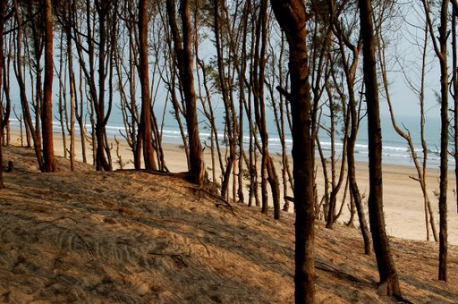
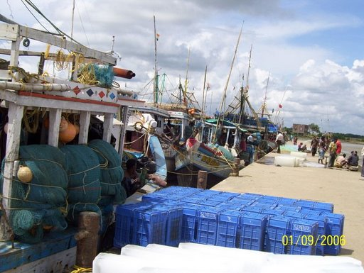
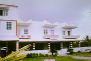

Sankarpur: Explore the Mystery of the Sea
Shankarpur is a beach town in Purba Medinipur district of West Bengal, about 185 km from Kolkata. Known as the "Miami of West Bengal," it offers endless stretches of sea kissing the beach, red crabs beneath your feet, and lush green Jhau forests.

How to Reach
By Bus
Buses depart from Dharamtala/Esplanade bus stand in Kolkata. You can take any bus heading to Digha and get off at Choddomile (also called Chaulkhola), located between Contai and Digha. From there, you can hire a car or van to reach the beach (15 mins).
Tip: The 7:30 AM AC bus run by WB Surface Transport Corporation is a good option.
By Car
If driving from Kolkata:
- Take the Second Hooghly Bridge and follow Kona Expressway.
- Turn left onto Bombay Road (NH6) towards Kolaghat.
- After crossing the Rupnarayan river, turn left towards Haldia (NH41).
- At Nandakumar crossing, turn right onto Digha Road.
- Drive past Contai to Choddomile, then take the left turn towards Shankarpur.
By Train
You can take the Tamralipta Express or Kandari Express from Howrah to Digha Flag Station. From Digha, you can hire a cab to Shankarpur (approx. 14 km).
Attractions & Activities

- The Beach: A virgin beach braided with sun-bathed sands and casuarina groves.
- Fishing Harbour: Visit the Sankarpur Jetty to see the fishermen's activities.
- Relaxation: It is less crowded than Digha, making it perfect for those seeking tranquility.
Hotels & Accommodation
Hotel Nest: Considered one of the best, located slightly away from the beach but offers transport.
Phone: 03220-264074
Hotel Sandy Bay: Located directly facing the sea. Known for good Bengali cuisine, especially sea food (Prawns, Pomfret, Bhetki).
Tariff: Rs. 300-500 (approx)
Benfish Tourist Lodges: Matsyagandha, Kinara, and Jowar (new villa-type property).
